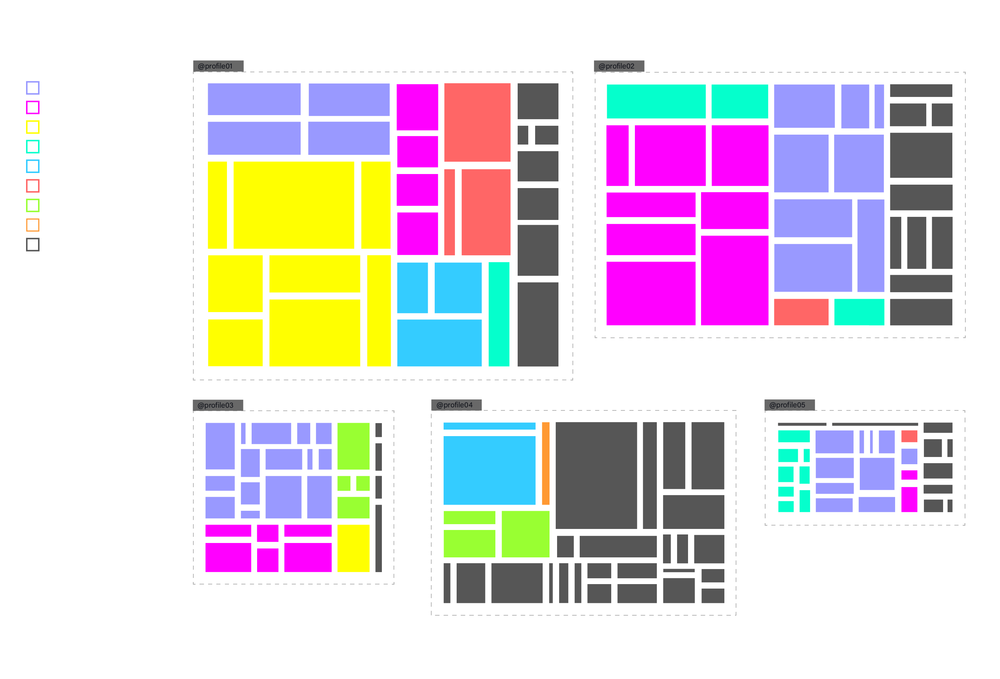
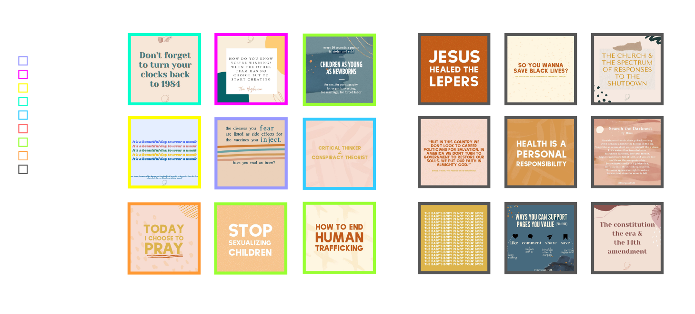
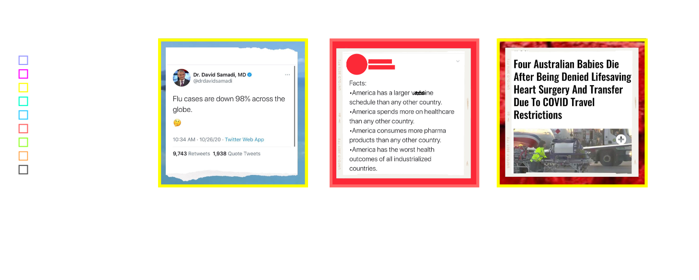
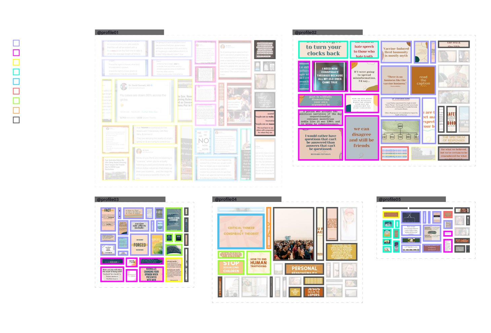

During the first lockdown due to Covid-19, many American influencer moms’ profiles started posting more frequently spreading conspiracy theory messages in their feed. These posts, in a short time, have dramatically increased the profiles' engagement, reaching popularity also thanks to the aesthetics behind which the conspiracy theories’ messages are hidden: colors, fonts, illustrations, patterns, and screenshots are here the main protagonists. To understand how this phenomenon is spreading we scraped the last 30 posts of top influencer moms to analyze which visual formats they use to convey conspiracy theories in their IG profiles.
It’s very easy to see how conspiracy theories related posts dominate over other kinds of content. The most part of this content is related to the No Vax conspiracy theory. This is based on the fact that the profiles are from mothers who care a lot about issues that affect children. Another widespread conspiracy theory is awakening to urge people to wake up from the dream of a perfect society.
Many profiles use a "pastel" aesthetic, under which conspiracy theories are hidden. By using soft colors, serif fonts and simple patterns they manage to make their message look softer and it’s very difficult to recognize whether a post belongs to the conspiracy theories world or not. With the same visual language, this aesthetic is used to talk about different types of content: those conspiratorial and others related to lifestyle, fitness, wellness, family, and personal content.
Profile01 is the one with the greatest engagement. The posts are made up of screenshots of articles and tweets (mainly of the user himself) with a frame that uses solid colors or images (more or less defined). The content of the screenshots consists in reporting news and providing data to support the argument.
By taking a closer look at the graphics of the No vax and Save the children posts, we find that most of them have backgrounds with light and muted colors that, at first glance, do not draw attention to them. The tones of beige, blue and orange are the most present and inspire calm and softness.
